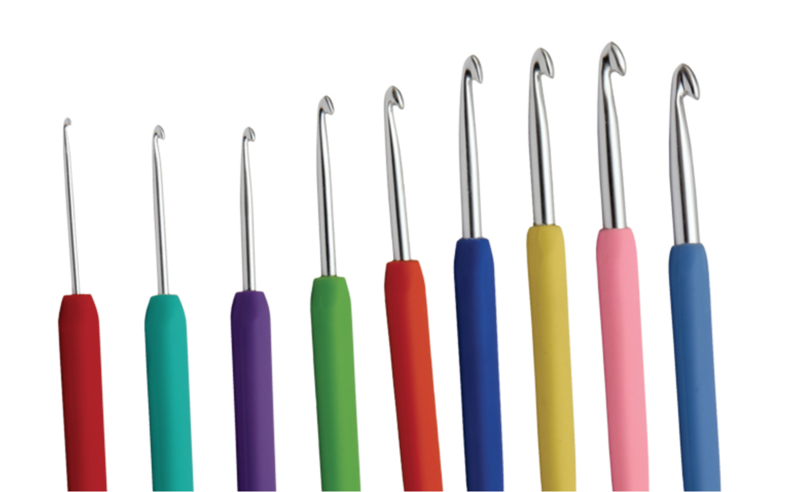

First of all, congrats on starting your crochet journey! Crocheting is a fun, relaxing hobby that anyone can do! On this website, we will talk about the basics of crocheting.
What Do You Need to Start Crocheting?
Crochet hooks: comes in a range of sizes and shapes, but the most important thing to remember is to match the size of the hook with the yarn (use larger crochet hooks with thicker yarn and vise virsa).

Yarn: Comes in many different weights and textures because different patterns will recommend various types of yarns. Would recommend a medium weight cotton yarn!
Slip knot: This is how you would cast the yarn into the hook, so you can start crocheting.
Chain snitch: One of the most important stitches you'll need to know because they form the foundation of most crochet projects.
Single crochet stitch: Another important stitch that can work with rows and spirals.
Double crochet stitch:Learning how to double crochet is important if you want to work most crochet patterns. It's useful in majority patterns.
Click on the title for more beginner stitches by Crochetcraft kiduniya on YouTube! Go to beginner projects to get some recommended pieces to start off with!